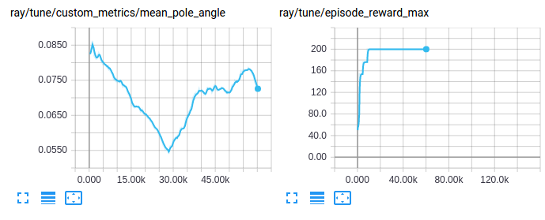

Advanced Python APIs
Contents
Advanced Python APIs#
Custom Training Workflows#
In the basic training example,
Tune will call train() on your algorithm once per training iteration and report
the new training results.
Sometimes, it is desirable to have full control over training, but still run inside Tune.
Tune supports custom trainable functions that can be used to
implement custom training workflows (example).
For even finer-grained control over training, you can use RLlib’s lower-level building blocks directly to implement fully customized training workflows.
Curriculum Learning#
In Curriculum learning, the environment can be set to different difficulties
(or “tasks”) to allow for learning to progress through controlled phases (from easy to
more difficult). RLlib comes with a basic curriculum learning API utilizing the
TaskSettableEnv environment API.
Your environment only needs to implement the set_task and get_task methods
for this to work. You can then define an env_task_fn in your config,
which receives the last training results and returns a new task for the env to be set to:
from ray.rllib.env.apis.task_settable_env import TaskSettableEnv
class MyEnv(TaskSettableEnv):
def get_task(self):
return self.current_difficulty
def set_task(self, task):
self.current_difficulty = task
def curriculum_fn(train_results, task_settable_env, env_ctx):
# Very simple curriculum function.
current_task = task_settable_env.get_task()
new_task = current_task + 1
return new_task
# Setup your Algorithm's config like so:
config = {
"env": MyEnv,
"env_task_fn": curriculum_fn,
}
# Train using `Tuner.fit()` or `Algorithm.train()` and the above config stub.
# ...
There are two more ways to use the RLlib’s other APIs to implement curriculum learning.
Use the Algorithm API and update the environment between calls to train().
This example shows the algorithm being run inside a Tune function.
This is basically the same as what the built-in env_task_fn API described above
already does under the hood, but allows you to do even more customizations to your
training loop.
import ray
from ray import tune
from ray.rllib.algorithms.ppo import PPO
def train(config, reporter):
algo = PPO(config=config, env=YourEnv)
while True:
result = algo.train()
reporter(**result)
if result["episode_reward_mean"] > 200:
task = 2
elif result["episode_reward_mean"] > 100:
task = 1
else:
task = 0
algo.workers.foreach_worker(
lambda ev: ev.foreach_env(
lambda env: env.set_task(task)))
num_gpus = 0
num_workers = 2
ray.init()
tune.Tuner(
tune.with_resources(train, resources=tune.PlacementGroupFactory(
[{"CPU": 1}, {"GPU": num_gpus}] + [{"CPU": 1}] * num_workers
),)
param_space={
"num_gpus": num_gpus,
"num_workers": num_workers,
},
).fit()
You could also use RLlib’s callbacks API to update the environment on new training results:
import ray
from ray import tune
from ray.rllib.agents.callbacks import DefaultCallbacks
class MyCallbacks(DefaultCallbacks):
def on_train_result(self, algorithm, result, **kwargs):
if result["episode_reward_mean"] > 200:
task = 2
elif result["episode_reward_mean"] > 100:
task = 1
else:
task = 0
algorithm.workers.foreach_worker(
lambda ev: ev.foreach_env(
lambda env: env.set_task(task)))
ray.init()
tune.Tuner(
"PPO",
param_space={
"env": YourEnv,
"callbacks": MyCallbacks,
},
).fit()
Global Coordination#
Sometimes, it is necessary to coordinate between pieces of code that live in different processes managed by RLlib. For example, it can be useful to maintain a global average of a certain variable, or centrally control a hyperparameter used by policies. Ray provides a general way to achieve this through named actors (learn more about Ray actors here). These actors are assigned a global name and handles to them can be retrieved using these names. As an example, consider maintaining a shared global counter that is incremented by environments and read periodically from your driver program:
import ray
@ray.remote
class Counter:
def __init__(self):
self.count = 0
def inc(self, n):
self.count += n
def get(self):
return self.count
# on the driver
counter = Counter.options(name="global_counter").remote()
print(ray.get(counter.get.remote())) # get the latest count
# in your envs
counter = ray.get_actor("global_counter")
counter.inc.remote(1) # async call to increment the global count
Ray actors provide high levels of performance, so in more complex cases they can be used implement communication patterns such as parameter servers and allreduce.
Callbacks and Custom Metrics#
You can provide callbacks to be called at points during policy evaluation.
These callbacks have access to state for the current
episode.
Certain callbacks such as on_postprocess_trajectory, on_sample_end,
and on_train_result are also places where custom postprocessing can be applied to
intermediate data or results.
User-defined state can be stored for the
episode
in the episode.user_data dict, and custom scalar metrics reported by saving values
to the episode.custom_metrics dict. These custom metrics will be aggregated and
reported as part of training results. For a full example, take a look at
this example script here
and
these unit test cases here.
Tip
You can create custom logic that can run on each evaluation episode by checking
if the RolloutWorker is in
evaluation mode, through accessing worker.policy_config["in_evaluation"].
You can then implement this check in on_episode_start() or on_episode_end()
in your subclass of DefaultCallbacks.
For running callbacks before and after the evaluation
runs in whole we provide on_evaluate_start() and on_evaluate_end.
Click here to see the full API of the DefaultCallbacks class
- class ray.rllib.algorithms.callbacks.DefaultCallbacks(legacy_callbacks_dict: Optional[Dict[str, callable]] = None)[source]#
Abstract base class for RLlib callbacks (similar to Keras callbacks).
These callbacks can be used for custom metrics and custom postprocessing.
By default, all of these callbacks are no-ops. To configure custom training callbacks, subclass DefaultCallbacks and then set {“callbacks”: YourCallbacksClass} in the algo config.
- on_algorithm_init(*, algorithm: Algorithm, **kwargs) None[source]#
Callback run when a new algorithm instance has finished setup.
This method gets called at the end of Algorithm.setup() after all the initialization is done, and before actually training starts.
- Parameters
algorithm – Reference to the trainer instance.
kwargs – Forward compatibility placeholder.
- on_create_policy(*, policy_id: str, policy: ray.rllib.policy.policy.Policy) None[source]#
Callback run whenever a new policy is added to an algorithm.
- Parameters
policy_id – ID of the newly created policy.
policy – the policy just created.
- on_sub_environment_created(*, worker: RolloutWorker, sub_environment: Any, env_context: ray.rllib.env.env_context.EnvContext, env_index: Optional[int] = None, **kwargs) None[source]#
Callback run when a new sub-environment has been created.
This method gets called after each sub-environment (usually a gym.Env) has been created, validated (RLlib built-in validation + possible custom validation function implemented by overriding
Algorithm.validate_env()), wrapped (e.g. video-wrapper), and seeded.- Parameters
worker – Reference to the current rollout worker.
sub_environment – The sub-environment instance that has been created. This is usually a gym.Env object.
env_context – The
EnvContextobject that has been passed to the env’s constructor.kwargs – Forward compatibility placeholder.
- on_episode_created(*, worker: RolloutWorker, base_env: ray.rllib.env.base_env.BaseEnv, policies: Dict[str, ray.rllib.policy.policy.Policy], env_index: int, episode: Union[ray.rllib.evaluation.episode.Episode, ray.rllib.evaluation.episode_v2.EpisodeV2], **kwargs) None[source]#
Callback run when a new episode is created (but has not started yet!).
This method gets called after a new Episode(V2) instance is created to start a new episode. This happens before the respective sub-environment’s (usually a gym.Env)
reset()is called by RLlib.Episode(V2) created: This callback fires.
Respective sub-environment (gym.Env) is
reset().Callback
on_episode_startis fired.Stepping through sub-environment/episode commences.
- Parameters
worker – Reference to the current rollout worker.
base_env – BaseEnv running the episode. The underlying sub environment objects can be retrieved by calling
base_env.get_sub_environments().policies – Mapping of policy id to policy objects. In single agent mode there will only be a single “default” policy.
env_index – The index of the sub-environment that is about to be reset (within the vector of sub-environments of the BaseEnv).
episode – The newly created episode. This is the one that will be started with the upcoming reset. Only after the reset call, the
on_episode_startevent will be triggered.kwargs – Forward compatibility placeholder.
- on_episode_start(*, worker: RolloutWorker, base_env: ray.rllib.env.base_env.BaseEnv, policies: Dict[str, ray.rllib.policy.policy.Policy], episode: Union[ray.rllib.evaluation.episode.Episode, ray.rllib.evaluation.episode_v2.EpisodeV2], env_index: Optional[int] = None, **kwargs) None[source]#
Callback run right after an Episode has started.
This method gets called after the Episode(V2)’s respective sub-environment’s (usually a gym.Env)
reset()is called by RLlib.Episode(V2) created: Triggers callback
on_episode_created.Respective sub-environment (gym.Env) is
reset().Episode(V2) starts: This callback fires.
Stepping through sub-environment/episode commences.
- Parameters
worker – Reference to the current rollout worker.
base_env – BaseEnv running the episode. The underlying sub environment objects can be retrieved by calling
base_env.get_sub_environments().policies – Mapping of policy id to policy objects. In single agent mode there will only be a single “default” policy.
episode – Episode object which contains the episode’s state. You can use the
episode.user_datadict to store temporary data, andepisode.custom_metricsto store custom metrics for the episode.env_index – The index of the sub-environment that started the episode (within the vector of sub-environments of the BaseEnv).
kwargs – Forward compatibility placeholder.
- on_episode_step(*, worker: RolloutWorker, base_env: ray.rllib.env.base_env.BaseEnv, policies: Optional[Dict[str, ray.rllib.policy.policy.Policy]] = None, episode: Union[ray.rllib.evaluation.episode.Episode, ray.rllib.evaluation.episode_v2.EpisodeV2], env_index: Optional[int] = None, **kwargs) None[source]#
Runs on each episode step.
- Parameters
worker – Reference to the current rollout worker.
base_env – BaseEnv running the episode. The underlying sub environment objects can be retrieved by calling
base_env.get_sub_environments().policies – Mapping of policy id to policy objects. In single agent mode there will only be a single “default_policy”.
episode – Episode object which contains episode state. You can use the
episode.user_datadict to store temporary data, andepisode.custom_metricsto store custom metrics for the episode.env_index – The index of the sub-environment that stepped the episode (within the vector of sub-environments of the BaseEnv).
kwargs – Forward compatibility placeholder.
- on_episode_end(*, worker: RolloutWorker, base_env: ray.rllib.env.base_env.BaseEnv, policies: Dict[str, ray.rllib.policy.policy.Policy], episode: Union[ray.rllib.evaluation.episode.Episode, ray.rllib.evaluation.episode_v2.EpisodeV2, Exception], env_index: Optional[int] = None, **kwargs) None[source]#
Runs when an episode is done.
- Parameters
worker – Reference to the current rollout worker.
base_env – BaseEnv running the episode. The underlying sub environment objects can be retrieved by calling
base_env.get_sub_environments().policies – Mapping of policy id to policy objects. In single agent mode there will only be a single “default_policy”.
episode – Episode object which contains episode state. You can use the
episode.user_datadict to store temporary data, andepisode.custom_metricsto store custom metrics for the episode. In case of environment failures, episode may also be an Exception that gets thrown from the environment before the episode finishes. Users of this callback may then handle these error cases properly with their custom logics.env_index – The index of the sub-environment that ended the episode (within the vector of sub-environments of the BaseEnv).
kwargs – Forward compatibility placeholder.
- on_evaluate_start(*, algorithm: Algorithm, **kwargs) None[source]#
Callback before evaluation starts.
This method gets called at the beginning of Algorithm.evaluate().
- Parameters
algorithm – Reference to the algorithm instance.
kwargs – Forward compatibility placeholder.
- on_evaluate_end(*, algorithm: Algorithm, evaluation_metrics: dict, **kwargs) None[source]#
Runs when the evaluation is done.
Runs at the end of Algorithm.evaluate().
- Parameters
algorithm – Reference to the algorithm instance.
evaluation_metrics – Results dict to be returned from algorithm.evaluate(). You can mutate this object to add additional metrics.
kwargs – Forward compatibility placeholder.
- on_postprocess_trajectory(*, worker: RolloutWorker, episode: ray.rllib.evaluation.episode.Episode, agent_id: Any, policy_id: str, policies: Dict[str, ray.rllib.policy.policy.Policy], postprocessed_batch: ray.rllib.policy.sample_batch.SampleBatch, original_batches: Dict[Any, Tuple[ray.rllib.policy.policy.Policy, ray.rllib.policy.sample_batch.SampleBatch]], **kwargs) None[source]#
Called immediately after a policy’s postprocess_fn is called.
You can use this callback to do additional postprocessing for a policy, including looking at the trajectory data of other agents in multi-agent settings.
- Parameters
worker – Reference to the current rollout worker.
episode – Episode object.
agent_id – Id of the current agent.
policy_id – Id of the current policy for the agent.
policies – Mapping of policy id to policy objects. In single agent mode there will only be a single “default_policy”.
postprocessed_batch – The postprocessed sample batch for this agent. You can mutate this object to apply your own trajectory postprocessing.
original_batches – Mapping of agents to their unpostprocessed trajectory data. You should not mutate this object.
kwargs – Forward compatibility placeholder.
- on_sample_end(*, worker: RolloutWorker, samples: ray.rllib.policy.sample_batch.SampleBatch, **kwargs) None[source]#
Called at the end of RolloutWorker.sample().
- Parameters
worker – Reference to the current rollout worker.
samples – Batch to be returned. You can mutate this object to modify the samples generated.
kwargs – Forward compatibility placeholder.
- on_learn_on_batch(*, policy: ray.rllib.policy.policy.Policy, train_batch: ray.rllib.policy.sample_batch.SampleBatch, result: dict, **kwargs) None[source]#
Called at the beginning of Policy.learn_on_batch().
Note: This is called before 0-padding via
pad_batch_to_sequences_of_same_size.Also note, SampleBatch.INFOS column will not be available on train_batch within this callback if framework is tf1, due to the fact that tf1 static graph would mistake it as part of the input dict if present. It is available though, for tf2 and torch frameworks.
- Parameters
policy – Reference to the current Policy object.
train_batch – SampleBatch to be trained on. You can mutate this object to modify the samples generated.
result – A results dict to add custom metrics to.
kwargs – Forward compatibility placeholder.
- on_train_result(*, algorithm: Algorithm, result: dict, **kwargs) None[source]#
Called at the end of Algorithm.train().
- Parameters
algorithm – Current Algorithm instance.
result – Dict of results returned from Algorithm.train() call. You can mutate this object to add additional metrics.
kwargs – Forward compatibility placeholder.
Chaining Callbacks#
Use the MultiCallbacks class to chaim multiple callbacks together.
Visualizing Custom Metrics#
Custom metrics can be accessed and visualized like any other training result:
Customizing Exploration Behavior#
RLlib offers a unified top-level API to configure and customize an agent’s
exploration behavior, including the decisions (how and whether) to sample
actions from distributions (stochastically or deterministically).
The setup can be done via using built-in Exploration classes
(see this package),
which are specified (and further configured) inside
AlgorithmConfig().exploration(..).
Besides using one of the available classes, one can sub-class any of
these built-ins, add custom behavior to it, and use that new class in
the config instead.
Every policy has-an Exploration object, which is created from the AlgorithmConfig’s
.exploration(exploration_config=...) method, which specifies the class to use via the
special “type” key, as well as constructor arguments via all other keys,
e.g.:
from ray.rllib.algorithms.algorithm_config import AlgorithmConfig
config = AlgorithmConfig().exploration(
exploration_config={
# Special `type` key provides class information
"type": "StochasticSampling",
# Add any needed constructor args here.
"constructor_arg": "value",
}
)
The following table lists all built-in Exploration sub-classes and the agents that currently use these by default:
An Exploration class implements the get_exploration_action method,
in which the exact exploratory behavior is defined.
It takes the model’s output, the action distribution class, the model itself,
a timestep (the global env-sampling steps already taken),
and an explore switch and outputs a tuple of a) action and
b) log-likelihood:
@DeveloperAPI
def get_exploration_action(self,
*,
action_distribution: ActionDistribution,
timestep: Union[TensorType, int],
explore: bool = True):
"""Returns a (possibly) exploratory action and its log-likelihood.
Given the Model's logits outputs and action distribution, returns an
exploratory action.
Args:
action_distribution: The instantiated
ActionDistribution object to work with when creating
exploration actions.
timestep: The current sampling time step. It can be a tensor
for TF graph mode, otherwise an integer.
explore: True: "Normal" exploration behavior.
False: Suppress all exploratory behavior and return
a deterministic action.
Returns:
A tuple consisting of 1) the chosen exploration action or a
tf-op to fetch the exploration action from the graph and
2) the log-likelihood of the exploration action.
"""
pass
On the highest level, the Algorithm.compute_actions and Policy.compute_actions
methods have a boolean explore switch, which is passed into
Exploration.get_exploration_action. If explore=None, the value of
Algorithm.config[“explore”] is used, which thus serves as a main switch for
exploratory behavior, allowing e.g. turning off any exploration easily for
evaluation purposes (see Customized Evaluation During Training).
The following are example excerpts from different Algorithms’ configs
(see rllib/algorithms/algorithm.py) to setup different exploration behaviors:
# All of the following configs go into Algorithm.config.
# 1) Switching *off* exploration by default.
# Behavior: Calling `compute_action(s)` without explicitly setting its `explore`
# param will result in no exploration.
# However, explicitly calling `compute_action(s)` with `explore=True` will
# still(!) result in exploration (per-call overrides default).
"explore": False,
# 2) Switching *on* exploration by default.
# Behavior: Calling `compute_action(s)` without explicitly setting its
# explore param will result in exploration.
# However, explicitly calling `compute_action(s)` with `explore=False`
# will result in no(!) exploration (per-call overrides default).
"explore": True,
# 3) Example exploration_config usages:
# a) DQN: see rllib/algorithms/dqn/dqn.py
"explore": True,
"exploration_config": {
# Exploration sub-class by name or full path to module+class
# (e.g. “ray.rllib.utils.exploration.epsilon_greedy.EpsilonGreedy”)
"type": "EpsilonGreedy",
# Parameters for the Exploration class' constructor:
"initial_epsilon": 1.0,
"final_epsilon": 0.02,
"epsilon_timesteps": 10000, # Timesteps over which to anneal epsilon.
},
# b) DQN Soft-Q: In order to switch to Soft-Q exploration, do instead:
"explore": True,
"exploration_config": {
"type": "SoftQ",
# Parameters for the Exploration class' constructor:
"temperature": 1.0,
},
# c) All policy-gradient algos and SAC: see rllib/algorithms/algorithm.py
# Behavior: The algo samples stochastically from the
# model-parameterized distribution. This is the global Algorithm default
# setting defined in algorithm.py and used by all PG-type algos (plus SAC).
"explore": True,
"exploration_config": {
"type": "StochasticSampling",
"random_timesteps": 0, # timesteps at beginning, over which to act uniformly randomly
},
Customized Evaluation During Training#
RLlib will report online training rewards, however in some cases you may want to compute
rewards with different settings (e.g., with exploration turned off, or on a specific set
of environment configurations). You can activate evaluating policies during training
(Algorithm.train()) by setting the evaluation_interval to an int value (> 0)
indicating every how many Algorithm.train() calls an “evaluation step” is run:
# Run one evaluation step on every 3rd `Algorithm.train()` call.
{
"evaluation_interval": 3,
}
An evaluation step runs - using its own RolloutWorker``s - for ``evaluation_duration
episodes or time-steps, depending on the evaluation_duration_unit setting, which can
take values of either "episodes" (default) or "timesteps".
# Every time we run an evaluation step, run it for exactly 10 episodes.
{
"evaluation_duration": 10,
"evaluation_duration_unit": "episodes",
}
# Every time we run an evaluation step, run it for (close to) 200 timesteps.
{
"evaluation_duration": 200,
"evaluation_duration_unit": "timesteps",
}
Note: When using evaluation_duration_unit=timesteps and your evaluation_duration
setting is not divisible by the number of evaluation workers (configurable via
evaluation_num_workers), RLlib will round up the number of time-steps specified to
the nearest whole number of time-steps that is divisible by the number of evaluation
workers.
Also, when using evaluation_duration_unit=episodes and your
evaluation_duration setting is not divisible by the number of evaluation workers
(configurable via evaluation_num_workers), RLlib will run the remainder of episodes
on the first n eval RolloutWorkers and leave the remaining workers idle for that time.
For example:
# Every time we run an evaluation step, run it for exactly 10 episodes, no matter, how many eval workers we have.
{
"evaluation_duration": 10,
"evaluation_duration_unit": "episodes",
# What if number of eval workers is non-dividable by 10?
# -> Run 7 episodes (1 per eval worker), then run 3 more episodes only using
# evaluation workers 1-3 (evaluation workers 4-7 remain idle during that time).
"evaluation_num_workers": 7,
}
Before each evaluation step, weights from the main model are synchronized to all evaluation workers.
By default, the evaluation step (if there is one in the current iteration) is run
right after the respective training step.
For example, for evaluation_interval=1, the sequence of events is:
train(0->1), eval(1), train(1->2), eval(2), train(2->3), ....
Here, the indices show the version of neural network weights used.
train(0->1) is an update step that changes the weights from version 0 to
version 1 and eval(1) then uses weights version 1.
Weights index 0 represents the randomly initialized weights of our neural network(s).
Another example: For evaluation_interval=2, the sequence is:
train(0->1), train(1->2), eval(2), train(2->3), train(3->4), eval(4), ....
Instead of running train- and eval-steps in sequence, it is also possible to
run them in parallel via the evaluation_parallel_to_training=True config setting.
In this case, both training- and evaluation steps are run at the same time via
multi-threading.
This can speed up the evaluation process significantly, but leads to a 1-iteration
delay between reported training- and evaluation results.
The evaluation results are behind in this case b/c they use slightly outdated
model weights (synchronized after the previous training step).
For example, for evaluation_parallel_to_training=True and evaluation_interval=1,
the sequence is now:
train(0->1) + eval(0), train(1->2) + eval(1), train(2->3) + eval(2),
where + means: “at the same time”.
Note that the change in the weights indices with respect to the non-parallel examples above.
The evaluation weights indices are now “one behind”
the resulting train weights indices (train(1->**2**) + eval(**1**)).
When running with the evaluation_parallel_to_training=True setting, a special “auto” value
is supported for evaluation_duration. This can be used to make the evaluation step take
roughly as long as the concurrently ongoing training step:
# Run evaluation and training at the same time via threading and make sure they roughly
# take the same time, such that the next `Algorithm.train()` call can execute
# immediately and not have to wait for a still ongoing (e.g. b/c of very long episodes)
# evaluation step:
{
"evaluation_interval": 1,
"evaluation_parallel_to_training": True,
"evaluation_duration": "auto", # automatically end evaluation when train step has finished
"evaluation_duration_unit": "timesteps", # <- more fine grained than "episodes"
}
The evaluation_config key allows you to override any config settings for
the evaluation workers. For example, to switch off exploration in the evaluation steps,
do:
# Switching off exploration behavior for evaluation workers
# (see rllib/algorithms/algorithm.py). Use any keys in this sub-dict that are
# also supported in the main Algorithm config.
"evaluation_config": {
"explore": False
}
Note
Policy gradient algorithms are able to find the optimal policy, even if this is a stochastic one. Setting “explore=False” above will result in the evaluation workers not using this stochastic policy.
The level of parallelism within the evaluation step is determined via the
evaluation_num_workers setting. Set this to larger values if you want the desired
evaluation episodes or time-steps to run as much in parallel as possible.
For example, if your evaluation_duration=10, evaluation_duration_unit=episodes,
and evaluation_num_workers=10, each evaluation RolloutWorker
only has to run one episode in each evaluation step.
In case you observe occasional failures in your (evaluation) RolloutWorkers during
evaluation (e.g. you have an environment that sometimes crashes),
you can use an (experimental) new setting: enable_async_evaluation=True.
This will run the parallel sampling of all evaluation RolloutWorkers via a fault
tolerant, asynchronous manager, such that if one of the workers takes too long to run
through an episode and return data or fails entirely, the other evaluation
RolloutWorkers will pick up its task and complete the job.
Note that with or without async evaluation, all
fault tolerance settings, such as
ignore_worker_failures or recreate_failed_workers will be respected and applied
to the failed evaluation workers.
Here’s an example:
# Having an environment that occasionally blocks completely for e.g. 10min would
# also affect (and block) training:
{
"evaluation_interval": 1,
"evaluation_parallel_to_training": True,
"evaluation_num_workers": 5, # each worker runs two episodes
"evaluation_duration": 10,
"evaluation_duration_unit": "episodes",
}
Problem with the above example:
In case the environment used by worker 3 blocks for 10min, the entire training
and evaluation pipeline will come to a (10min) halt b/c of this.
The next train step cannot start before all evaluation has been finished.
Solution:
Switch on asynchronous evaluation, meaning, we don’t wait for individual
evaluation RolloutWorkers to complete their n episode(s) (or n time-steps).
Instead, any evaluation RolloutWorker can cover the load of another one that failed
or is stuck in a very long lasting environment step.
{
# ...
# same settings as above, plus:
"enable_async_evaluation": True, # evaluate asynchronously
}
In case you would like to entirely customize the evaluation step,
set custom_eval_function in your config to a callable, which takes the Algorithm
object and a WorkerSet object (the Algorithm’s self.evaluation_workers
WorkerSet instance) and returns a metrics dictionary.
See algorithm.py
for further documentation.
There is also an end-to-end example of how to set up a custom online evaluation in
custom_eval.py.
Note that if you only want to evaluate your policy at the end of training,
you can set evaluation_interval: [int], where [int] should be the number
of training iterations before stopping.
Below are some examples of how the custom evaluation metrics are reported nested under
the evaluation key of normal training results:
------------------------------------------------------------------------
Sample output for `python custom_eval.py`
------------------------------------------------------------------------
INFO algorithm.py:623 -- Evaluating current policy for 10 episodes.
INFO algorithm.py:650 -- Running round 0 of parallel evaluation (2/10 episodes)
INFO algorithm.py:650 -- Running round 1 of parallel evaluation (4/10 episodes)
INFO algorithm.py:650 -- Running round 2 of parallel evaluation (6/10 episodes)
INFO algorithm.py:650 -- Running round 3 of parallel evaluation (8/10 episodes)
INFO algorithm.py:650 -- Running round 4 of parallel evaluation (10/10 episodes)
Result for PG_SimpleCorridor_2c6b27dc:
...
evaluation:
custom_metrics: {}
episode_len_mean: 15.864661654135338
episode_reward_max: 1.0
episode_reward_mean: 0.49624060150375937
episode_reward_min: 0.0
episodes_this_iter: 133
------------------------------------------------------------------------
Sample output for `python custom_eval.py --custom-eval`
------------------------------------------------------------------------
INFO algorithm.py:631 -- Running custom eval function <function ...>
Update corridor length to 4
Update corridor length to 7
Custom evaluation round 1
Custom evaluation round 2
Custom evaluation round 3
Custom evaluation round 4
Result for PG_SimpleCorridor_0de4e686:
...
evaluation:
custom_metrics: {}
episode_len_mean: 9.15695067264574
episode_reward_max: 1.0
episode_reward_mean: 0.9596412556053812
episode_reward_min: 0.0
episodes_this_iter: 223
foo: 1
Rewriting Trajectories#
Note that in the on_postprocess_traj callback you have full access to the
trajectory batch (post_batch) and other training state. This can be used to
rewrite the trajectory, which has a number of uses including:
Backdating rewards to previous time steps (e.g., based on values in
info).Adding model-based curiosity bonuses to rewards (you can train the model with a custom model supervised loss).
To access the policy / model (policy.model) in the callbacks, note that
info['pre_batch'] returns a tuple where the first element is a policy and the
second one is the batch itself. You can also access all the rollout worker state
using the following call:
from ray.rllib.evaluation.rollout_worker import get_global_worker
# You can use this from any callback to get a reference to the
# RolloutWorker running in the process, which in turn has references to
# all the policies, etc: see rollout_worker.py for more info.
rollout_worker = get_global_worker()
Policy losses are defined over the post_batch data, so you can mutate that in
the callbacks to change what data the policy loss function sees.